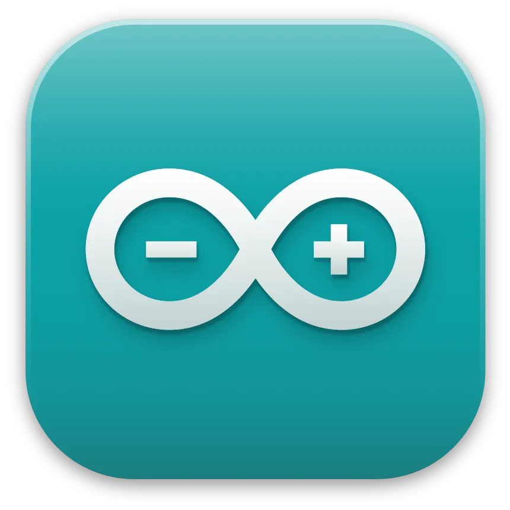
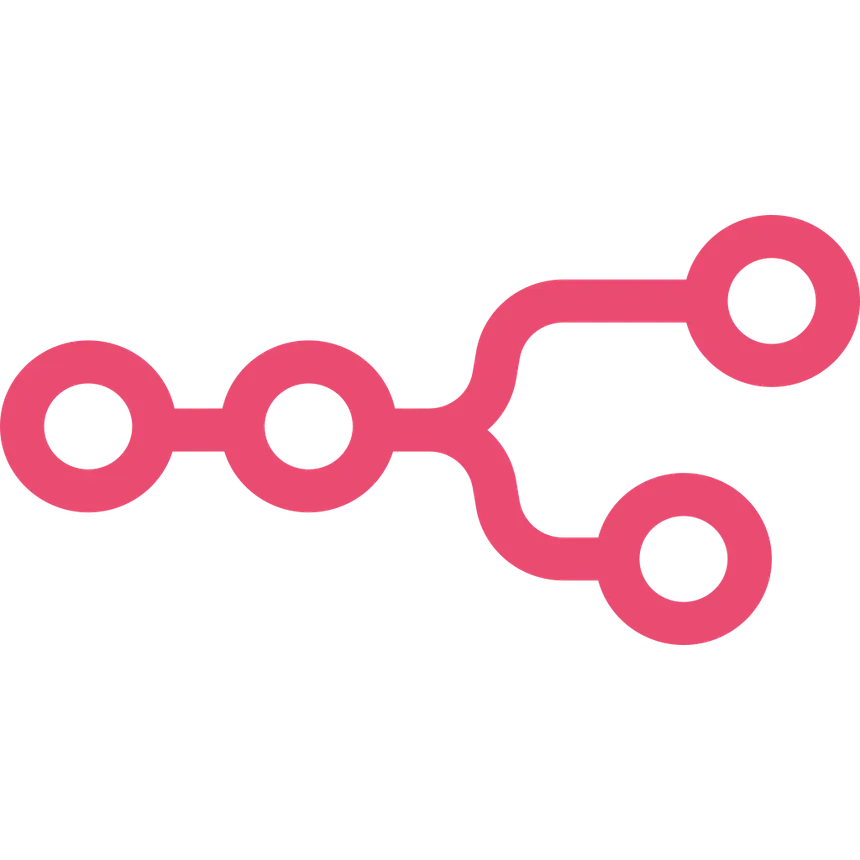
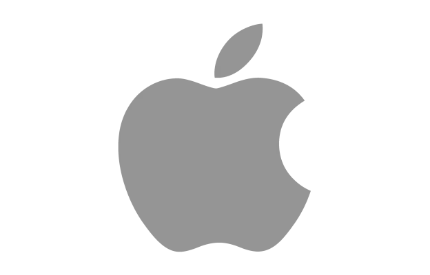
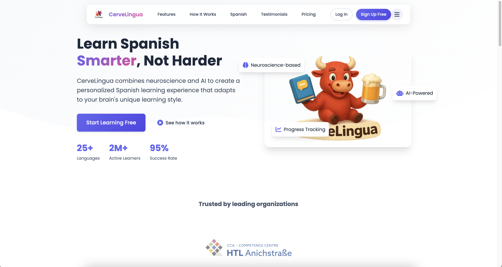
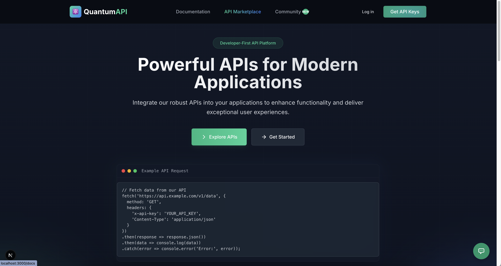
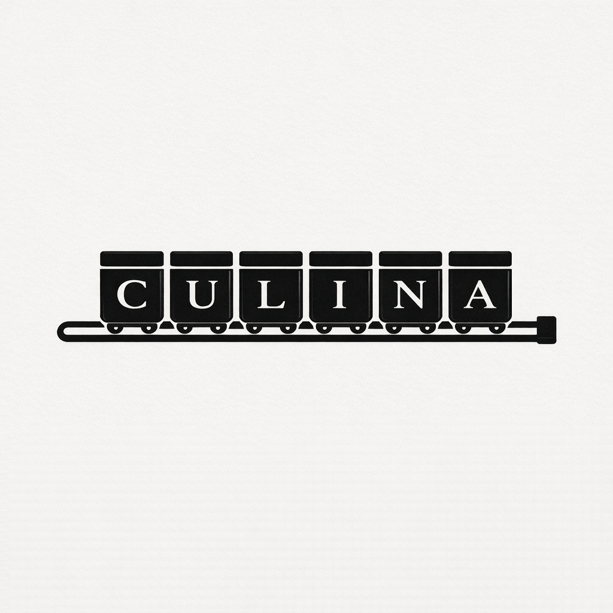

2024 — Present
Founder & Freelancer
WinWare.ggBuilding custom software solutions and developing internal products. Open for new opportunities.
Full-stack engineer & entrepreneur crafting high-performance software. Founder of WinWare.

Building custom software solutions and developing internal products. Open for new opportunities.
Currently running a Junior Company selling restaurant-level modular kitchen systems for home use.
Professional software development, automation, and system integration experience.
Wirtschaftsingenieurwesen und Betriebsinformatik — combining engineering with business.

Arduino
n8n
AppleI'm a young tech entrepreneur based in Innsbruck, Austria. Currently in my 4th year at HTL Anichstraße, I balance my education with building real products. From founding WinWare to co-creating CULINA, I believe in learning by doing.
My passion lies at the intersection of software engineering, AI, and IoT. I don't just write code — I architect solutions that make a difference.
"Code is poetry. Every line should have purpose, every function should tell a story.
— My approach to software engineering
Enterprise automation and IoT solutions.

Advanced emotion recognition platform.

High-performance data processing.

Modular kitchen systems with restaurant-level quality for your home.